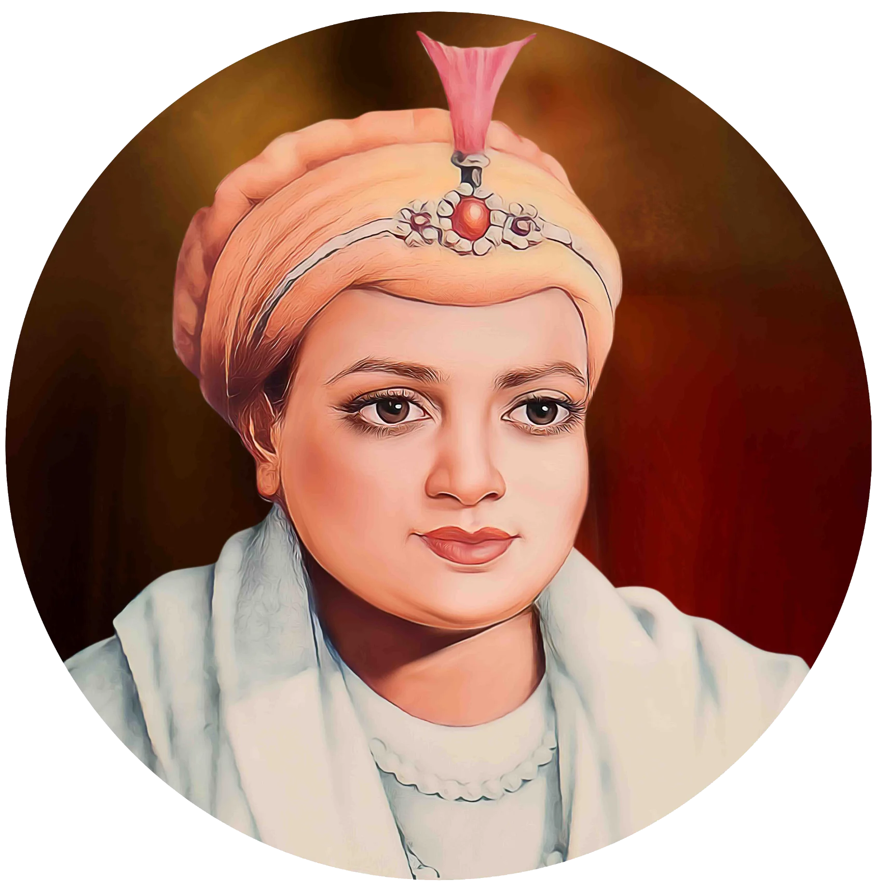

गुरु हर कृष्ण जी


शीर्षक: गुरु हर कृष्ण जी
श्रेणी: धार्मिक कोना
कलाकार: ऐतिहासिक व्यक्तित्व
वर्ष: 1656 – 1664
श्रेणी: धार्मिक कोना
कलाकार: ऐतिहासिक व्यक्तित्व
वर्ष: 1656 – 1664
गुरु हर कृष्ण जी
अष्टम सिख गुरु, गुरु हर कृष्ण जी का जन्म 7 जुलाई 1656 को कीरतपुर साहिब में गुरु हर राय जी और माता सुलखनी जी के घर हुआ था। पिता के ज्योति-जोत समाने के उपरांत मात्र 5 वर्ष 3 माह की आयु में वे गुरु पद पर आसीन हुए। उनकी असाधारण आध्यात्मिक प्रज्ञा और बाल्यकाल की पावनता के कारण उन्हें श्रद्धा से 'बाल गुरु' कहा जाता है।
मुग़ल बादशाह औरंगजेब के बुलावे पर जब गुरु साहिब दिल्ली पधारे, तो वे रायसीना में आमेर के राजा जयसिंह के भव्य महल में ठहरे। उस समय संपूर्ण दिल्ली भयंकर चेचक और हैजे की महामारी की चपेट में थी। बाल गुरु ने बिना किसी भेदभाव के महामारी से ग्रस्त तड़पते गरीबों और पीड़ितों की निष्काम सेवा की और अपने पवित्र कर-कमलों से जल पिलाकर उनके रोग दूर किए। पीड़ितों की सेवा करते हुए गुरु साहिब स्वयं चेचक से संक्रमित हो गए। 30 मार्च 1664 को मात्र 8 वर्ष की आयु में उन्होंने 'बाबा बकाले' (अगले गुरु बकाला में हैं) का पावन संदेश देकर नश्वर देह त्याग दी। दिल्ली में राजा जयसिंह का वही महल आज विश्वविख्यात 'गुरुद्वारा बंगला साहिब' के रूप में लाखों श्रद्धालुओं की आस्था का केंद्र है।
'स्री हरिकिसन धिआईऐ जिस डिठै सभि दुखु जाइ॥'
(श्री हरिकृष्ण जी का ध्यान धरने मात्र से संसार के समस्त दुःख-दर्द दूर हो जाते हैं।)
— गुरु गोबिंद सिंह जी (दशम ग्रंथ)
अष्टम सिख गुरु, गुरु हर कृष्ण जी का जन्म 7 जुलाई 1656 को कीरतपुर साहिब में गुरु हर राय जी और माता सुलखनी जी के घर हुआ था। पिता के ज्योति-जोत समाने के उपरांत मात्र 5 वर्ष 3 माह की आयु में वे गुरु पद पर आसीन हुए। उनकी असाधारण आध्यात्मिक प्रज्ञा और बाल्यकाल की पावनता के कारण उन्हें श्रद्धा से 'बाल गुरु' कहा जाता है।
मुग़ल बादशाह औरंगजेब के बुलावे पर जब गुरु साहिब दिल्ली पधारे, तो वे रायसीना में आमेर के राजा जयसिंह के भव्य महल में ठहरे। उस समय संपूर्ण दिल्ली भयंकर चेचक और हैजे की महामारी की चपेट में थी। बाल गुरु ने बिना किसी भेदभाव के महामारी से ग्रस्त तड़पते गरीबों और पीड़ितों की निष्काम सेवा की और अपने पवित्र कर-कमलों से जल पिलाकर उनके रोग दूर किए। पीड़ितों की सेवा करते हुए गुरु साहिब स्वयं चेचक से संक्रमित हो गए। 30 मार्च 1664 को मात्र 8 वर्ष की आयु में उन्होंने 'बाबा बकाले' (अगले गुरु बकाला में हैं) का पावन संदेश देकर नश्वर देह त्याग दी। दिल्ली में राजा जयसिंह का वही महल आज विश्वविख्यात 'गुरुद्वारा बंगला साहिब' के रूप में लाखों श्रद्धालुओं की आस्था का केंद्र है।
'स्री हरिकिसन धिआईऐ जिस डिठै सभि दुखु जाइ॥'
(श्री हरिकृष्ण जी का ध्यान धरने मात्र से संसार के समस्त दुःख-दर्द दूर हो जाते हैं।)
— गुरु गोबिंद सिंह जी (दशम ग्रंथ)

मोबाइल पर खोलें
अपने फोन पर इस कलाकृति को देखने के लिए स्कैन करें।